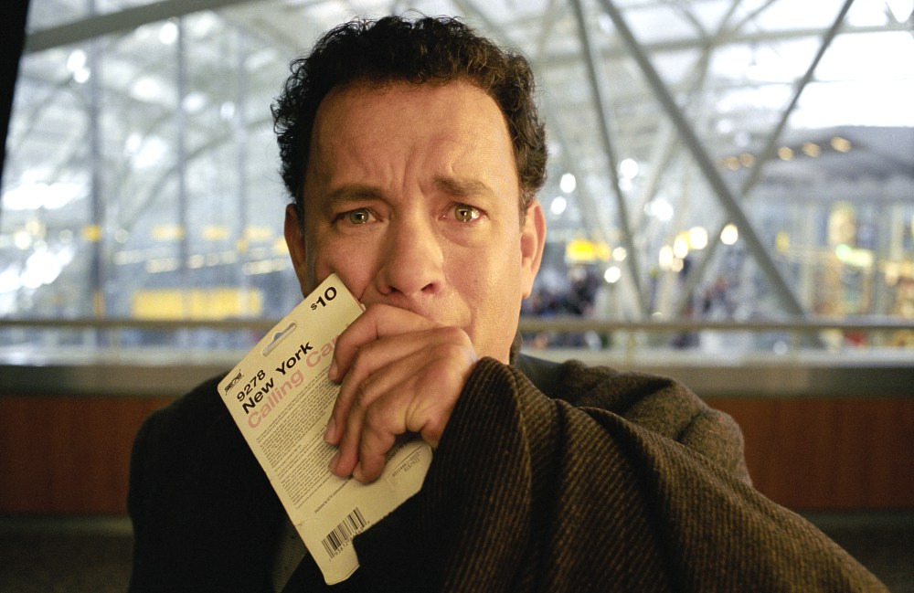
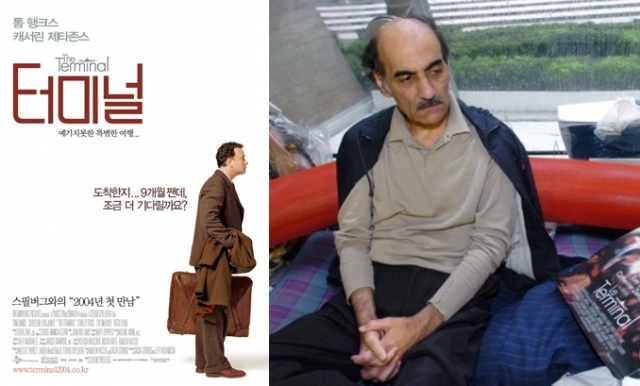
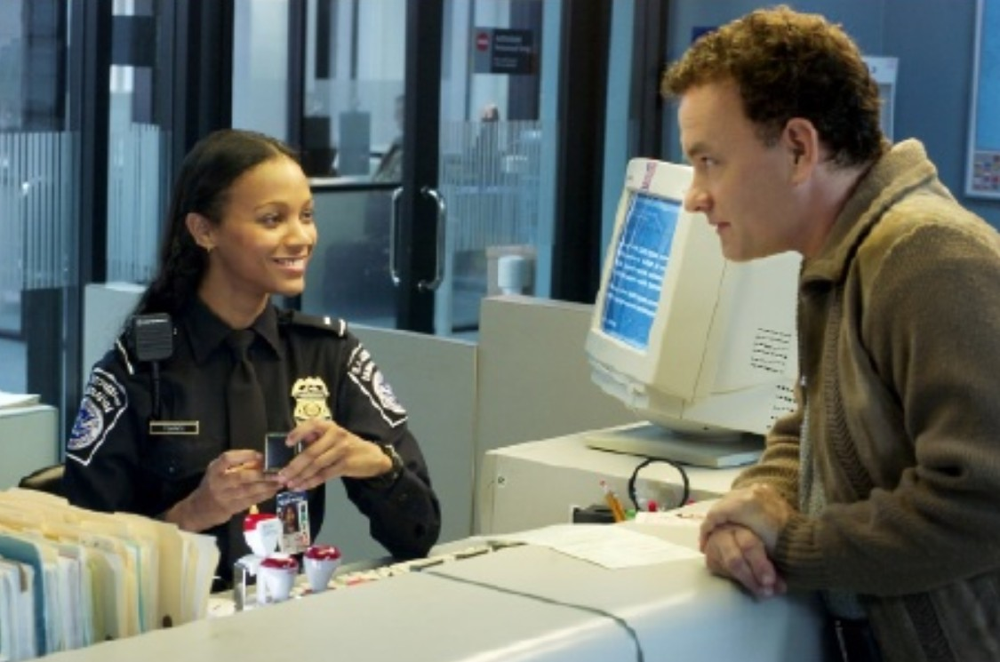
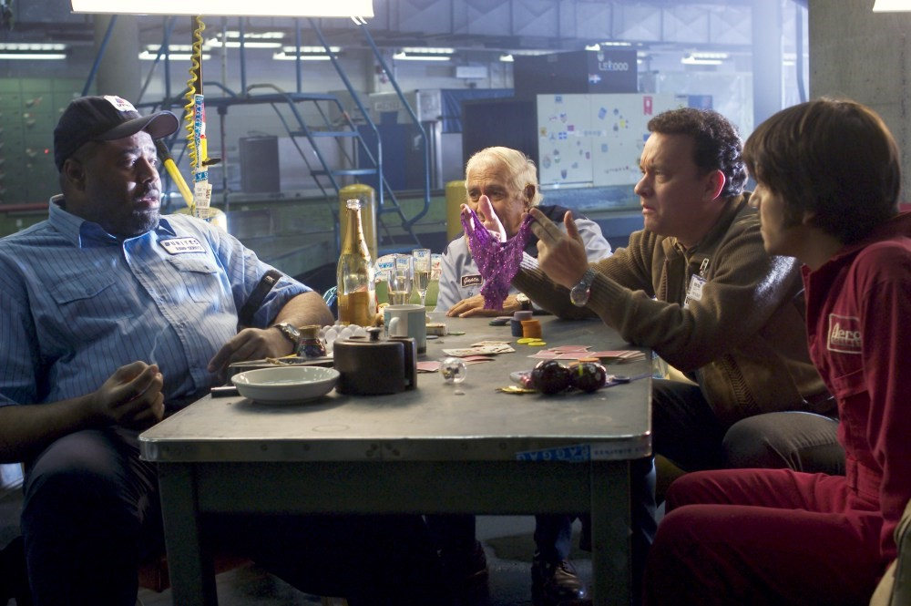

|

“쿠데타에 휩싸인 고국.”
1988년부터 2006년까지 프랑스 파리 샤를 드 골 국제공항에서
무려 18년 동안 머물렀던 이란인 메르한 카리미 나세리(Mehran Karimi Nasseri, 1945~2022)의 실화에서
모티브를 가져온 작품. 동유럽에 위치한 작은 가상의 나라 ‘크로코지아’의 평범한 남자 빅터 나보스키(톰 행크스).
뉴욕 입성의 부푼 마음을 안고 JFK 공항에 도착한다. 그러나 입국 심사대를 빠져 나가기도 전에 들려온 청천벽력 같은 소식!
바로 그가 미국으로 날아오는 동안 고국에선 쿠데타가 일어나고, 일시적으로 ‘유령국가’가 되었다는 것. |
실제인물 나세리는 2022년 파리 드 골 공항에서 사망했다. 그는 1977년 이란에서 왕정 반대 시위를 주도하다 여권 없이 추방됐다고 주장해왔는데
이는 확실치는 않다. 그는 ‘알프레드경’이라는 애칭으로 불리며 공항 직원과 승객들 사이에서 유명인이 됐다.
터미널 내 빨간 플라스틱 벤치에서 잠을 잤고, 공항 직원들의 도움으로 직원 시설에서 샤워를 했다.
나세리는 일기를 쓰거나 공항에 비치된 잡지를 읽고, 지나가는 여행객을 관찰하며 시간을 보냈다고 한다.
“누구나 힘겨운 전투를 한다.”  그는 1999년 프랑스로부터 난민 지위를 인정받은 뒤에도 공항에 계속 머물렀다. 공항 직원들은 그가 공항에 장기간 머물며 정신 상태가 온전치 않았다고 전했다. 당시 의료진은 “그가 공항에서 화석이 되었다”고 했고, 매표소 직원은 그를 ‘외부에서 살 능력이 없는 죄수’에 비유하기도 했다.그의 변호사였던 크리스티안 부르게는 “그는 공항에서 떠나는 것을 두려워한다”고 했다. 나세리는 2006년 건강 악화로 입원 치료가 필요해 공항을 떠났다. 공항 관계자는 “그는 요양원에 머물다 올해 9월 중순부터 공항에 돌아와 다시 노숙을 했다”며 “공항 공동체 전체가 그에게 애착을 느꼈고 돌아온 그를 최대한 보살폈다”고 했다. 사인은 심장마비였다. 사망 당시 그의 수중엔 단지 현금 수천 유로(수백만원)가 있었다. 18년동안 살던 공항으로 돌아와서 숨진 것이다. ‘인생에는 한 가지 확실한 게 있다. 나세리의 기구함은 이런 메시지에 매우 걸맞으며, 그의 인생역정은 심각한 드라마의 소재로 제격이다. 관객한테 더 통렬한 페이소스를 기대할수록 코미디의 파급력은 커지기에. 조금만 한 눈을 팔아도 길 |

을 잃은 것 같은 불안감을 영화 한 편으로 조금은 녹여준다. 대한민국의 평론가들은 대체로 감독 스티븐 스필버그의 연출과 톰 행크스의 연기에는 호평을 내렸으나, 영화가 현실 정치 문제를 건드리는 방식에 반감을 드러냈다. 허문영 평론가는 영화를 합리적인 미국 체계에 '인민주의적 휴머니즘'을 도입하려는 시도로 도식화하면서, 9·11 테러 이후의 냉혹한 미국의 현실을 거의 드러내지 않은 인공적인 이야기로 평가했다. 반면 듀나는 40~50년대 할리우드 영화의 스타일로 그려낸 '영화광의 회고조의 손길로 재현된 감상적인 코미디'로 평가하였다.  <터미널>의 모든 인물들은 각자의 길로 떠난다. 누군가는 사랑을 쫓아, 또 누군가는 오랜 시간 피해 지내왔지만 그리워하던 집을 쫓아. 각자 저마다의 목적지로 향하는 이들이 모인 곳이 결국 어딘가로 떠나야만 하는 '터미널'이라는 점을 생각하면 의미심장한 결말이다. 터미널은 깊이나 무게는 없지만, 우아하고 단정하며 살짝 우울한 뒷맛을 남기는 코미디이다. 영화가 주는 정서적 영향력은 값싼 샴페인의 뒷맛처럼 쉽게 사라져버리는 것이긴 해도 혀끝에 남아있는 그 짧은 시간 동안 영화가 우리에게 전달하는 즐거움은 나쁘지 않다. 영화 <터미널>은 개개인의 인생과도 맞닿아있다. 어딘가로 떠나는 그 과정 속에서 때로는 누군가와 함께 하기도 하며, 또 누군가와는 결국 다른 길을 선택하기도 하겠지만 결국 언젠가, 어디선가, 누군가의 도움을 통해 우리는 각자의 목적지로 향한다. |